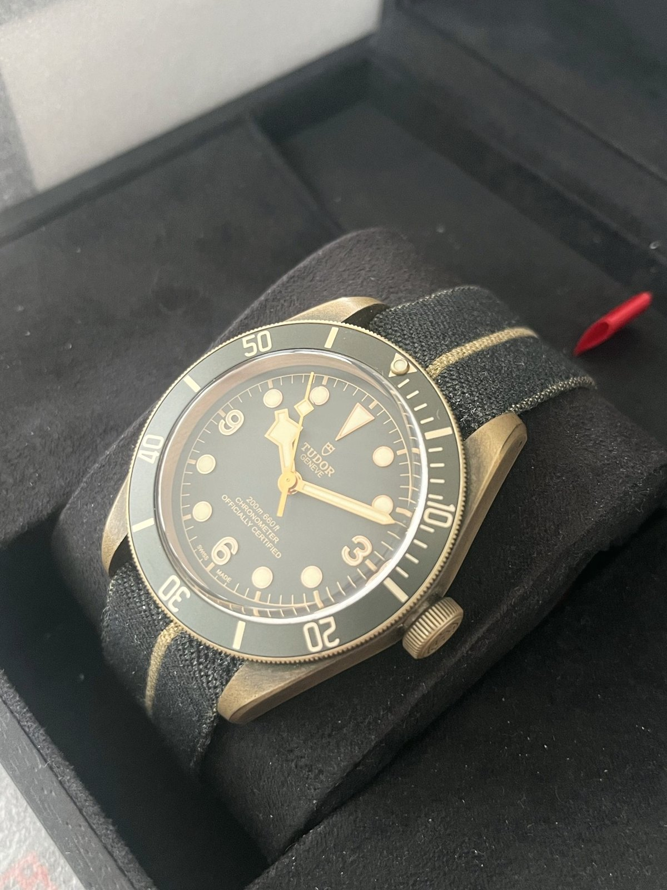
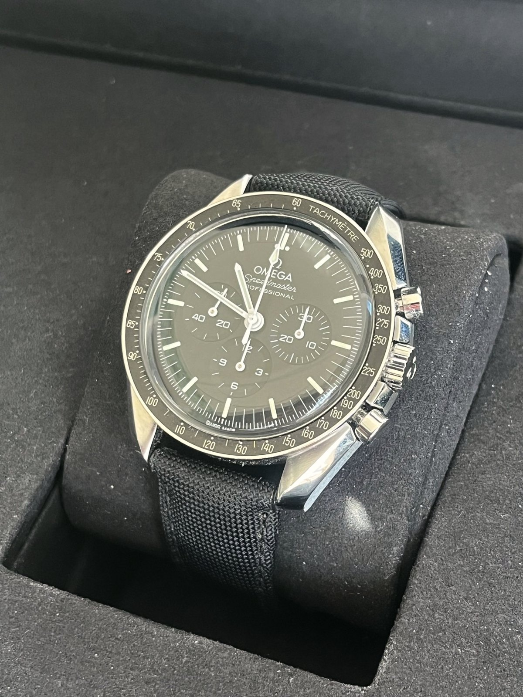
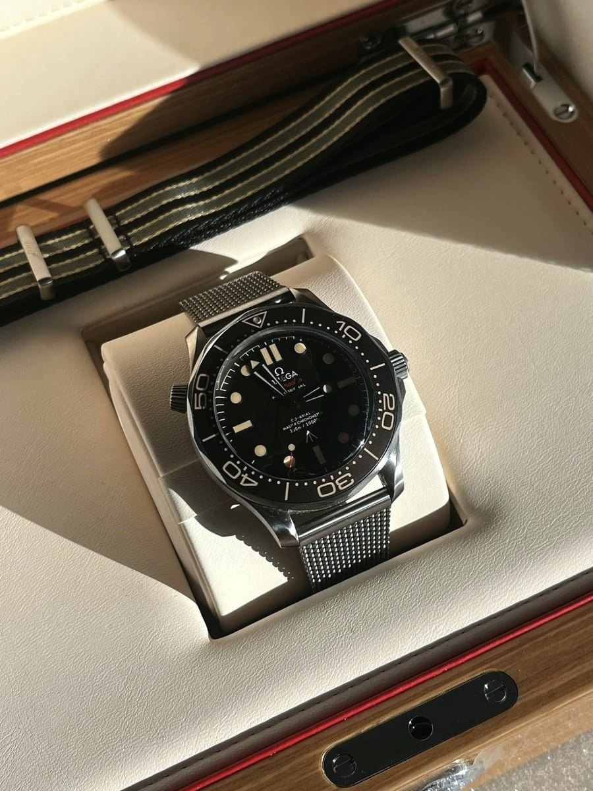
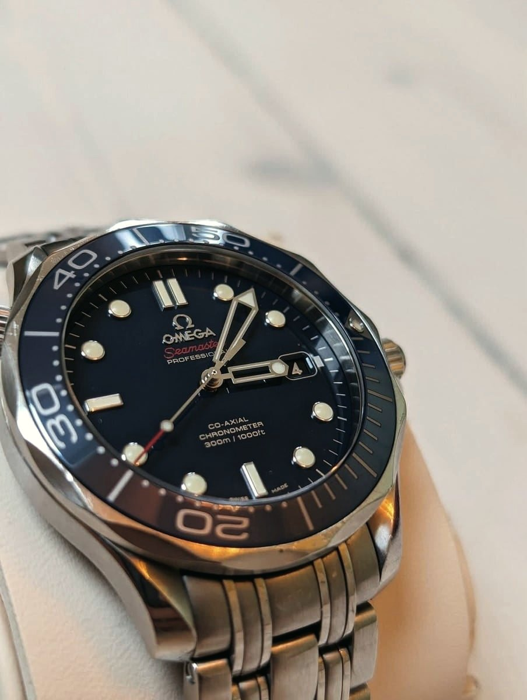
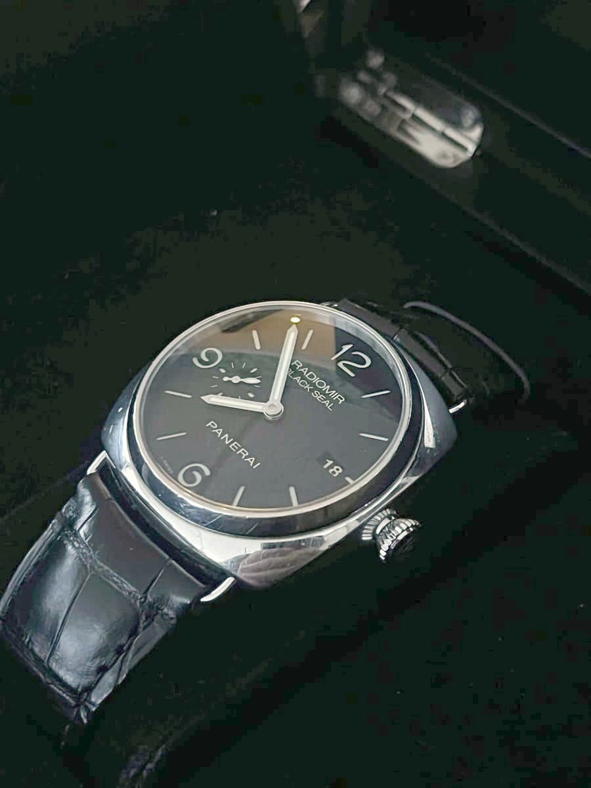

Archive · 16 watches
Sold watches
Every watch that has passed through All in Time, photographed as it was. Looking for one like them? Tell us and we will keep an eye out.

Black Bay Bronze
Aluminium-bronze case that darkens and warms with wear, so no two age alike. Green bezel, gilt details, fabric strap.

Speedmaster Moonwatch
Hand-wound chronograph with the tachymeter bezel and black step dial. The watch that went to the moon, and has barely changed since.

Seamaster Diver 300M 007 Edition
The Diver 300M made for the James Bond films: warm brown-toned dial and bezel, vintage-style lume and a mesh bracelet.

Seamaster Diver 300M, blue
Blue dial and bezel, skeleton sword hands and the five-link bracelet. A Seamaster that works with a suit or a swim.

Radiomir
The cushion case and wire lugs of the 1930s Italian navy watches, reduced to a dial, two hands and a strap.

Black Bay, burgundy
The burgundy bezel and gilt details that made the Black Bay famous, over a domed black dial.

Black Bay, blue
Navy bezel and dial with silver markers and snowflake hands. The quietest colour in the Black Bay range.

Speedmaster Professional
The Moonwatch on a steel bracelet: black dial, three subdials, tachymeter bezel and a hand-wound chronograph movement.

Black Bay
Black dial and bezel, gilt markers and snowflake hands. The look of Tudor's 1950s divers, made today.

Seamaster Diver 300M, blue wave
The laser-engraved wave dial in deep blue with a ceramic bezel. The modern Seamaster at its best.

Seamaster Planet Ocean
Black dial with orange accents, a dive bezel and a solid steel bracelet. Built for depth, sized for every day.

Seamaster Diver 300M
The classic Seamaster 300M: blue wave-pattern dial, skeleton sword hands, date at three and the five-link bracelet.

Black Bay, green
Black dial with gilt details, a coloured dive bezel and Tudor's snowflake hands.

Constellation
Two-tone steel and gold with the Constellation's signature bracelet bars and case claws, around a pale dial.

Black Bay GMT
Tudor's travel watch: a red and blue bezel, a fourth hand for a second time zone and a riveted-style steel bracelet.

Submariner Date
Black dial and bezel, date under the Cyclops lens and an Oyster bracelet. The dive watch every other dive watch is measured against.